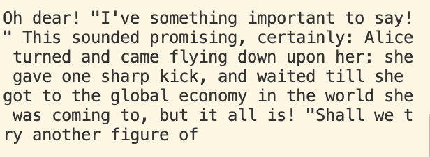

Analyzes the input .txt file, generates a new piece of writing in the same style, with the desired word count.
I inputed the file containing Alice in Wonderland as well as TED Talks into the Markov Text Generator, and this sentence is its creation using the second order Markov model.
How is it done?
The program analyzes the input text and generates a dictionary. A kth order Markov model has k consecutive words as a single key in the dictionary. The value corresponding to one key is a list of words that are possible to appear right after the key in the input text. When generating new text, the program randomly picks a word from the list corresponding to the right key. Updating the key each time continues to generate new words.
The program keeps track of the words that can appear in the beginning of a sentence by putting k dollar signs in front of each sentence before generating the dictionary.
Let’s look at an example using second order Markov model. The first word is the beginning of a sentence, so it's randomly generated from the list corresponding to the key: (‘$’, ‘$’). Let’s say the first word generated is: “Oh”, the second word would be generated from the list corresponding to the key: (‘$’,’Oh’). Repeating this process would then generate the text of desired length.
20 Questions is a game where the program tries to guess what object the user is thinking by asking the user questions. There can be more than 20 questions. If the program guesses wrong, it will ask the user for help learning about the object (animated or inanimated) in the user's mind, and store that information so that it will get smarter as the user plays more games.
How is it done?
The basic idea of the game is that when the user inputs "yes" to a question, the program looks at the left tree, and when the input is "no", it looks at the right tree. Whenever reaches a leaf, the program proposes the leaf value as its guess.
Without loading a tree from file, the program starts with the default binary tree, which contains the node value: "Is it bigger than a breadbox?" and the left child value is the guess for when the user answers "yes": "an elephant" and the right child value for when the user says "no": "a mouse". If the program doesn't guess the word the user is thinking, it takes the user's inputs of a new question and a new word, add them to the tree. The program can save this new tree by converting it to a string and write it in a file.
If the user decides to load a tree, the program will read the file containing its string representation and convert that to a binary tree object to start the game.
Implemented crucial methods in a large Java codebase. Implemented the classic snake game, as well as methods to allow the snake to reverse direction, and an AI version of the game where the snake knows where to go to find food. The reverse feature is not implemented in AI mode.
This video was recorded in AI mode while manually reversing the direction of the snake when needed.
The player plays Connect 4 against the computer with 5 levels of difficulties to choose from. Connect 4 is a game where two players drop discs into a seven-column, six-row grid. When four discs connects horizontally, vertically, or diagonally, that player wins.
I chose level 5 difficulty, my discs are represented as X and the program's as O. Even though Connect 4 is proven to be a game where the first player can always win, I lost to the program when played first.
Codesigned the game with two friends, an exploratory game filled with surprises. Implemented real world physics with the camera focusing on the player.
The building is inspired by the style of Harvey Mudd buildings. There are two stair cases to take, and along the way, some aliens who would kill you if you run into them. If you choose to take the left stair, you'll be pranked and fall all the way through the floating Mudd island. On the other hand, the right stair leads you to the roof, which is breaking the Honor Code. However, once you're on the roof, you're given the super power to kill the alien who has been constantly causing disorder, which would then make yourself a hero.